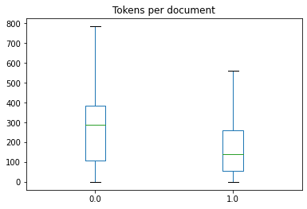

Code
!pip install datasets transformers tokenizers -Uqq
from pathlib import Path
import numpy as np
import pandas as pdMay 21, 2022
I’ve previously written about my use of fastai’s vision_learner to create a classification model that was pretty good (> 95% accuracy) at detecting whether an image contained redactions or not.
This week in the course we switched domains and got to know HuggingFace’s transformers library as a pathway into NLP (natural language processing) which is all about text inputs. I struggled quite a bit trying to think of interesting yet self-contained / small uses of NLP that I could try out this week. A lot of the common uses for simple NLP modelling seem to be in the area of things like ‘sentiment analysis’ where I couldn’t really see something I could build. Also there are a lot of NLP uses cases which feel unethical or creepy (perhaps more so than in the computer vision, it felt to me).
I emerged at the end of this thought process with the idea to try to pit image classification and text classification against one another: could I train an NLP model that would outperform my image classifier in detecting whether a specific document or page contains a redaction or not?
Of course, the first thing I had to do was to OCR all the pages in my image dataset and convert this all into a text dataset. When it comes to OCR tools, there are a number of different options available and I’d luckily experimented around with them. (A pretty useful overview of three leading options can be found in this blogpost by Francesco Pochetti.) I went with Tesseract as I knew had pretty good performance and accuracy for English-language documents.
My process for converting the documents wasn’t particularly inspired. Essentially I just loop over the image files one by one, run the OCR engine over them to extract the text and then create a new .txt file with the extracted text. At the end, I had two folders with my data, one containing texts whose corresponding images I knew had contained redactions, and one where there were no redactions.
I had two hunches that I hoped would help my NLP model.
What follows is my attempt to follow steps initially outlined in Jeremy Howard’s Kaggle notebook that the course reviewed this week in the live lesson. My code doesn’t depart from the original notebook much.
I save my .txt files on the machine and I get a list of all the paths of those files.
I iterate through all the paths, making of list of all the redacted texts as strings.
I needed a way of obtaining the labels for my dataset. These labels were the parent label for each path name. The training process below needed the labels to be floats.
def is_redacted(path):
"Extracts the label for a specific filepath"
if str(path.parent).split("/")[-1] == "redacted":
return float(1)
else:
return float(0)
is_redacted(files[1])0.0Converting a Python dict into a Pandas DataFrame is pretty simple as long as you provide the data in the right formats. I had to play around with this a little when I was getting this to work.
We now have a DataFrame containing 3886 rows of data. You can see here that 35 rows have no visible text. Potentially something went wrong with the OCR extraction, or the redaction covered the entire image. I didn’t really know or want to fiddle around with that too much, so I left those rows in.
We create a Dataset object from our DataFrame. It requires that our targets have the column name labels.
We’re finetuning a pre-trained model here, so I start with the small version of Deberta which will allow me (I hope!) to iterate quickly and come up with an initial baseline and sense of whether this is even a viable approach to solving the problem.
Before we finetune our model, we have to do two things to our text data in order that it works within our gradient descent powered training process:
Tokenisation is the process of splitting our words into shorter stubs of text – there are varying schools of thought and use cases on the extent to which you break the words down. We have to use the same tokenisation process that was used by our pretrained model, so we let transformers grab the original tokenisers that was used with deberta-v3-small.
from transformers import AutoModelForSequenceClassification, AutoTokenizer
tokz = AutoTokenizer.from_pretrained(model_nm)Special tokens have been added in the vocabulary, make sure the associated word embeddings are fine-tuned or trained.
/opt/conda/lib/python3.8/site-packages/transformers/convert_slow_tokenizer.py:434: UserWarning: The sentencepiece tokenizer that you are converting to a fast tokenizer uses the byte fallback option which is not implemented in the fast tokenizers. In practice this means that the fast version of the tokenizer can produce unknown tokens whereas the sentencepiece version would have converted these unknown tokens into a sequence of byte tokens matching the original piece of text.
warnings.warn(
Special tokens have been added in the vocabulary, make sure the associated word embeddings are fine-tuned or trained.We split our data into training and validation subsets as per usual so that we know how our model is doing while training.
DatasetDict({
train: Dataset({
features: ['input', 'labels', 'input_ids', 'token_type_ids', 'attention_mask'],
num_rows: 2914
})
test: Dataset({
features: ['input', 'labels', 'input_ids', 'token_type_ids', 'attention_mask'],
num_rows: 972
})
})We define our metric as Pearson’s r AKA the Pearson correlation coefficient, a metric I don’t feel an immense instinctual understanding for, but suffice it for this blogpost to know that a higher value (up to a maximum of 1) is better.
Here we define our batch size, the number of epochs we want to train for as well as the learning rate. The defaults in Jeremy’s NLP notebook were far higher than what you see here. His batch size was 128. When I ran the cells that follow, I hit the infamous “CUDA out of memory” error more or less immediately. I was running on a machine with a 16GB RAM GPU, but this apparently wasn’t enough and the batch size was far too large. I had to reduce it down to 4, as you can see, in order to even be able to train the model. There are tradeoffs to this in terms of how well the model learns, but without spending lots of money on fancy machines this was the compromise I had to make.
model = AutoModelForSequenceClassification.from_pretrained(
model_nm, num_labels=1
)
trainer = Trainer(
model,
args,
train_dataset=dds["train"],
eval_dataset=dds["test"],
tokenizer=tokz,
compute_metrics=corr_d,
)Some weights of the model checkpoint at microsoft/deberta-v3-small were not used when initializing DebertaV2ForSequenceClassification: ['lm_predictions.lm_head.dense.weight', 'lm_predictions.lm_head.LayerNorm.weight', 'mask_predictions.dense.bias', 'lm_predictions.lm_head.LayerNorm.bias', 'mask_predictions.classifier.weight', 'lm_predictions.lm_head.bias', 'mask_predictions.LayerNorm.bias', 'lm_predictions.lm_head.dense.bias', 'mask_predictions.dense.weight', 'mask_predictions.classifier.bias', 'mask_predictions.LayerNorm.weight']
- This IS expected if you are initializing DebertaV2ForSequenceClassification from the checkpoint of a model trained on another task or with another architecture (e.g. initializing a BertForSequenceClassification model from a BertForPreTraining model).
- This IS NOT expected if you are initializing DebertaV2ForSequenceClassification from the checkpoint of a model that you expect to be exactly identical (initializing a BertForSequenceClassification model from a BertForSequenceClassification model).
Some weights of DebertaV2ForSequenceClassification were not initialized from the model checkpoint at microsoft/deberta-v3-small and are newly initialized: ['classifier.weight', 'classifier.bias', 'pooler.dense.bias', 'pooler.dense.weight']
You should probably TRAIN this model on a down-stream task to be able to use it for predictions and inference.
Using amp half precision backendThe following columns in the training set don't have a corresponding argument in `DebertaV2ForSequenceClassification.forward` and have been ignored: input. If input are not expected by `DebertaV2ForSequenceClassification.forward`, you can safely ignore this message.
/opt/conda/lib/python3.8/site-packages/transformers/optimization.py:306: FutureWarning: This implementation of AdamW is deprecated and will be removed in a future version. Use the PyTorch implementation torch.optim.AdamW instead, or set `no_deprecation_warning=True` to disable this warning
warnings.warn(
***** Running training *****
Num examples = 2914
Num Epochs = 5
Instantaneous batch size per device = 4
Total train batch size (w. parallel, distributed & accumulation) = 4
Gradient Accumulation steps = 1
Total optimization steps = 3645| Epoch | Training Loss | Validation Loss | Pearson |
|---|---|---|---|
| 1 | 0.250100 | 0.168366 | 0.705429 |
| 2 | 0.171600 | 0.134761 | 0.748499 |
| 3 | 0.118200 | 0.114869 | 0.784274 |
| 4 | 0.089600 | 0.093946 | 0.818484 |
| 5 | 0.063100 | 0.091717 | 0.822977 |
Saving model checkpoint to outputs/checkpoint-500
Configuration saved in outputs/checkpoint-500/config.json
Model weights saved in outputs/checkpoint-500/pytorch_model.bin
tokenizer config file saved in outputs/checkpoint-500/tokenizer_config.json
Special tokens file saved in outputs/checkpoint-500/special_tokens_map.json
The following columns in the evaluation set don't have a corresponding argument in `DebertaV2ForSequenceClassification.forward` and have been ignored: input. If input are not expected by `DebertaV2ForSequenceClassification.forward`, you can safely ignore this message.
***** Running Evaluation *****
Num examples = 972
Batch size = 8
Saving model checkpoint to outputs/checkpoint-1000
Configuration saved in outputs/checkpoint-1000/config.json
Model weights saved in outputs/checkpoint-1000/pytorch_model.bin
tokenizer config file saved in outputs/checkpoint-1000/tokenizer_config.json
Special tokens file saved in outputs/checkpoint-1000/special_tokens_map.json
The following columns in the evaluation set don't have a corresponding argument in `DebertaV2ForSequenceClassification.forward` and have been ignored: input. If input are not expected by `DebertaV2ForSequenceClassification.forward`, you can safely ignore this message.
***** Running Evaluation *****
Num examples = 972
Batch size = 8
Saving model checkpoint to outputs/checkpoint-1500
Configuration saved in outputs/checkpoint-1500/config.json
Model weights saved in outputs/checkpoint-1500/pytorch_model.bin
tokenizer config file saved in outputs/checkpoint-1500/tokenizer_config.json
Special tokens file saved in outputs/checkpoint-1500/special_tokens_map.json
Saving model checkpoint to outputs/checkpoint-2000
Configuration saved in outputs/checkpoint-2000/config.json
Model weights saved in outputs/checkpoint-2000/pytorch_model.bin
tokenizer config file saved in outputs/checkpoint-2000/tokenizer_config.json
Special tokens file saved in outputs/checkpoint-2000/special_tokens_map.json
The following columns in the evaluation set don't have a corresponding argument in `DebertaV2ForSequenceClassification.forward` and have been ignored: input. If input are not expected by `DebertaV2ForSequenceClassification.forward`, you can safely ignore this message.
***** Running Evaluation *****
Num examples = 972
Batch size = 8
Saving model checkpoint to outputs/checkpoint-2500
Configuration saved in outputs/checkpoint-2500/config.json
Model weights saved in outputs/checkpoint-2500/pytorch_model.bin
tokenizer config file saved in outputs/checkpoint-2500/tokenizer_config.json
Special tokens file saved in outputs/checkpoint-2500/special_tokens_map.json
The following columns in the evaluation set don't have a corresponding argument in `DebertaV2ForSequenceClassification.forward` and have been ignored: input. If input are not expected by `DebertaV2ForSequenceClassification.forward`, you can safely ignore this message.
***** Running Evaluation *****
Num examples = 972
Batch size = 8
Saving model checkpoint to outputs/checkpoint-3000
Configuration saved in outputs/checkpoint-3000/config.json
Model weights saved in outputs/checkpoint-3000/pytorch_model.bin
tokenizer config file saved in outputs/checkpoint-3000/tokenizer_config.json
Special tokens file saved in outputs/checkpoint-3000/special_tokens_map.json
Saving model checkpoint to outputs/checkpoint-3500
Configuration saved in outputs/checkpoint-3500/config.json
Model weights saved in outputs/checkpoint-3500/pytorch_model.bin
tokenizer config file saved in outputs/checkpoint-3500/tokenizer_config.json
Special tokens file saved in outputs/checkpoint-3500/special_tokens_map.json
The following columns in the evaluation set don't have a corresponding argument in `DebertaV2ForSequenceClassification.forward` and have been ignored: input. If input are not expected by `DebertaV2ForSequenceClassification.forward`, you can safely ignore this message.
***** Running Evaluation *****
Num examples = 972
Batch size = 8
Training completed. Do not forget to share your model on huggingface.co/models =)
At the end of all this, we have a Pearson’s score of 0.82 on our validation set which doesn’t seem to be as good as our image classifier. I’m not sure how I would go about comparing these two different metrics. I imagine I’d want to ensure that both my metrics were identical to make a like-for-like comparison.
My model is available on the Huggingface Hub here.
transformers library exposed me to a bunch of new errors and hoops I had to jump through.transformers in the coming months.The next model I train hopefully will not be relating to redactions, I promise!
UPDATE: I read a bit in the new O’Reilly book by the transformers team, Natural Language Processing with Transformers, which seems to address the issue of the same text size:
“Transformer models have a maximum input sequence length that is referred to as the maximum context size. For applications using DistilBERT, the maximum context size is 512 tokens, which amounts to a few paragraphs of text. […] Texts that are longer than a model’s context size need to be truncated, which can lead to a loss in performance if the truncated text contains crucial information.” (pages 28-29 of the paperback edition)
The book suggests plotting out the number of tokens to get a sense of the distribution of the data by size:
import matplotlib.pyplot as plt
df["Tokens per document"] = df["input"].apply(lambda x: len(x.split()))
df.boxplot(
"Tokens per document",
by="labels",
grid=False,
showfliers=False,
)
plt.suptitle("")
plt.xlabel("")
plt.show()
Here we can see that we have a fairly wide distribution, with quite a few texts going all the way up to 800 tokens in length, so that is probably responsible for the large amounts of RAM needed, but perhaps the truncation of texts is also harming our performance.
When I visit the deberta-v3-small model card on Huggingface, I also see reference to a maximum sequence length of 256 which would indeed harm my model and its ability to learn, I reckon.